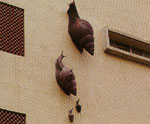

| 原載1989.5.12.自立早報，收入1994年，呂清夫著「現代視覺品味派」 | 更新日期:2001/4/29 | 點選次數:520 |

為什麼有的相機叫做傻瓜相機呢？為什麼使用那種相機的人與傻瓜有關呢？是人傻瓜嗎？不，只是拍照技術「傻瓜」而已，就像人對天文一竅不通時被稱為「星盲」一樣，表示某種的「沒知識」而已。然而「星盲」是幸運的，因為我們的國中隨著太空時代的來臨，已開授地球科學的課程，同時又列入聯考的枓目之一，可知其受重視之一斑了。但是攝影的「傻瓜」則不然，我們在國民教育中一直沒有看到攝影的課程，雖然理論上是「教育即生活」,但是最生活化的攝影則學校並不教給學生，因之，長大之後，需要照相的時候，總是必須惡補一番，而為著避免失敗，只好求助於傻瓜相機了。 但是使用這種相機似乎也不能完全解決問題,即使撇開品味的問題不談，單單相機冠上「傻瓜」一詞似乎就令人矮了半截,因之，廣告才會自圓其說地宣稱「它傻瓜,你聰明」。難道我們的教育不能把人教得更聰明？而需要廣告來自我安慰？ 我們知道，現代人莫不活在照片、電影、電視之中，這些影像又常是無遠弗屆,即發即至，如傳真照片、衛星電視等是，因之，西半球發生的事情,東半球往往立即可以「看」到,這就是地球村的時代，也就是資訊的時代。 在這樣的時代中，人人都喜歡觀賞影像，人人都喜歡照相,人人也都是被照體,更有甚者,人人即透過影像去認識世界,去思考問題,於是攝影的單眼往往取代了人類的雙眼,影像的世界變成了現實的世界,敏感的人於是懷疑,影像就等於現實嗎？於是利用影像去討論影像,這才出現了後現代藝術。 地球村也好,資訊時代也好，後現代藝術也好，早在六O年代即已出現於西方,當時並有深入的文明論問世，如資訊理論家麥克魯漢(M．MCLumham)便推出了一系列的著作，一時在文化界造成莫大的旋風，他的「理解媒體」一書更成了藝術界幾乎人手一冊的名著，只是他的訊息一直不曾流入台灣。 在六０年代的台灣，我一直不知道如何把information一詞譯成中文，因為這個名詞在六O年代以後的西方已有新的涵義。等到八０年代，我才看到它被譯成「資訊」,於是有所謂資訊時代的來臨。但是「資訊」在台灣已被矮化，因為大家似乎認為資訊就是電腦，而資訊教育也就是電腦教育,實在是以偏概全。 這種矮化不用說乃是台灣經濟掛帥的結果，然而卻使得影像及其他當代文明失去了一次探討的機會。攝影本可以在這個時代振興一番，但是沒有，傻瓜相機的傻瓜仍舊無法變得聰明一點,大家仍就不會注意,一張香噴噴的牛排照片對一隻狗而言,只是一張紙而已，牠絕不會因牛排照片而唾涎，只有人類會受影像而動心,這好比只有人類會因文字符號而動情一般。 大家也一直不曾正視，影像是可以作假的,「像不厭詐」乃是攝影的本質之一。因之，靠攝影去採證有時未必可靠。日本「朝日電視台」便曾虛構過新聞特寫節目,一時引起軒然大波。日前本報亦曾刊登「攝影災害」一文，其中略謂：「一張合成的蛇鷹捉魚照片騙過了評審，得了『自然』攝影的首獎，這跟偽照文書、詐欺有何分別？」 不用說,我們的教育在這方面,也不會教給大家更聰明一點,更遑論去認識攝影在當代文明中的重要性。因之,一般教育固然不知攝影為何物,大專教育更是看不到任何一個攝影的科系,而為了拍攝奧運的電視畫面,我們還需派員出國受訓,看到人家拍攝的畫面又只又自嘆弗如。所以.不論觀念上、技術上,我們都是攝影的後進國。我們只是有錢購買最昂貴的器材而已,就像我們只是有錢興建最貴的運動場、最大的文化中心一般。 但願我們的教育內容莫再矮化現代文明，熱門的資訊教育應該不只是電腦教育而已,新興的地球科學也應該把環保的觀念好好列進去。如是攝影的傻瓜,乃至現代文明的傻瓜才會聰明起來。